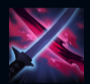
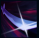
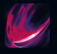
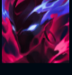
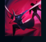

Yone
| Yone The Unforgotten | |
|---|---|
| Release date | 06.08.2020 |
| Class | Assassin |
| Skirmisher | |
| Resource | Manaless(Soul Unbound) |
| Range type | Melee |
| Adaptive type | Physical |
| Base statistics | |||
| Health | 550 – 1995 | Resource | N/A |
| Health regen. | 7.5 – 20.25 |
Resource regen. | N/A |
| Armor | 28 – 85.8 | Attack damage | 60 – 94 |
| Magic resist. | 32 – 53.25 | Crit. damage | 175% ( × 0.9) |
| Move. speed | 345 | Attack range | 175 |
Pe timpul vieții era cunoscut drept Yone, fratele lui Yasuo și discipol renumit al școlii de spadasini din satul său natal. După ce a murit ucis de mâna propriului său frate, o entitate malefică de pe tărâmul spiritelor a început să îl vâneze. În cele din urmă, a fost nevoit s-o distrugă cu propria ei sabie. Acum Yone este blestemat să-i poarte masca diabolică pe chip și își petrece timpul vânându-i pe toți demonii pentru a înțelege ce a devenit. |  |
CALEA VÂNĂTORULUI Yone provoacă daune magice la fiecare al doilea atac. În plus, șansele sale de lovitură critică sunt sporite. |
||
|---|---|---|---|---|
 |
TĂIȘ MORTAL Atacă și le provoacă daune tuturor inamicilor într-o linie. La impact, oferă un cumul de ''Furtună iminentă'' timp de câteva secunde. La 2 cumuluri, Yone se năpustește în față cu ajutorul unei rafale de vânt care aruncă în sus inamicii. ''Tăiș mortal'' este ca un atac de bază, iar timpii săi de reactivare și de încărcare sunt reduși de viteza de atac. |
|||
 |
SPINTECAREA SPIRITULUI Lovește toți inamicii aflați într-o zonă de con din fața sa. Îi oferă lui Yone un scut a cărui valoare crește în funcție de numărul campionilor loviți cu abilitatea. Timpul de reactivare și timpul de pregătire ai ''Spintecării spiritului'' scad în funcție de viteza de atac. |
|||
|  |
SUFLET DEZLĂNȚUIT Spiritul lui Yone își părăsește trupul și primește un bonus la viteza de mișcare. Când efectul abilității se încheie, spiritul este forțat să revină în trup, iar Yone provoacă din nou o parte din daunele provocate de acesta. |
|||
 |
SOARTĂ PECETLUITĂ Yone se deplasează instantaneu în spatele ultimului campion aflat într-o linie și lovește cu atâta putere, încât trage toți inamicii înspre el. |